Institution
SASTRA Deemed to be University, Tamil Nadu
Programme
M.Tech (Integrated) — Advanced Manufacturing
Phase I / Phase II
Sem 9 (2020) · Nozzle Flow Analysis | Sem 10 (2021) · Printer Fabrication
Industry Partner
Falcon 3D, Chennai — printer developed for company deployment
Industrial Context — Falcon 3D, Chennai
This project ran concurrently with work at Falcon 3D, a Chennai-based additive manufacturing company. The printer was developed to give the company an in-house PEEK printing capability without the cost barrier of commercial machines.
The Engineering Problem
PEEK (Polyether Ether Ketone) rivals metals in specific strength, survives continuous service at 250°C, and is biocompatible enough for surgical implants and dental prosthetics. But printing it via FDM is technically demanding: the nozzle must reach at least 390°C, the bed must hold 150°C, and the chamber must maintain 90°C to prevent warping and delamination. Commercial PEEK printers start at Rs. 5,00,000 — making them inaccessible for small and medium manufacturers.
The project had two interlocking goals: first, build the simulation knowledge of how PEEK behaves thermally inside a nozzle; then use that understanding to build a printer that actually achieves those conditions — at a fraction of the market cost.
Why PEEK — Material Properties
Pure PEEK was selected over fibre-reinforced composites — literature confirmed that pure PEEK delivers superior impact strength, while composites trade that for flexural modulus. A wider application range and no composite-specific processing constraints made it the right choice for a general-purpose platform.
Phase I — Nozzle Thermal Analysis (2020)
Before building the printer, the critical question was: how long can a standard heater block operate at PEEK printing temperature before the material inside reaches its degradation limit of 663 K? That answer defines what any cooling system needs to achieve. COMSOL Multiphysics 5.3a was used to build and validate a thermal-fluid model — progressing from 2D to full 3D geometry.
2D Cold Flow Baseline
Pipe model (2 mm × 11 mm) with water at 0.30 m/s, 293 K. Validated against Darcy-Weisbach analytical solution — pressure drop deviation under 10 Pa. Confirmed numerical solver accuracy.
2D Hot PEEK Flow
PEEK in liquid state at 650 K introduced into the heater block. 50 W/m² constant heat flux. Time-dependent study run to find when the material reaches 663 K — onset of thermal degradation.
3D Annular Model
Full 3D annular nozzle geometry matching commercial 0.4 mm RepRap dimensions, built in COMSOL. Captures axisymmetric heat transfer from cartridge through the polymer melt to the nozzle tip.
3D PEEK Thermal Prediction
PEEK properties substituted into the validated 3D geometry. Full transient simulation run to determine exact time to degradation under continuous operation without active cooling.
2D Simulation — Degradation Timeline
The 2D model shows the temperature field accumulating inside the heater block over time. Starting at 650 K inlet, the cartridge heater continuously adds energy to the nozzle region. The critical 663 K degradation threshold is reached after 133 minutes of uninterrupted operation without any active cooling.
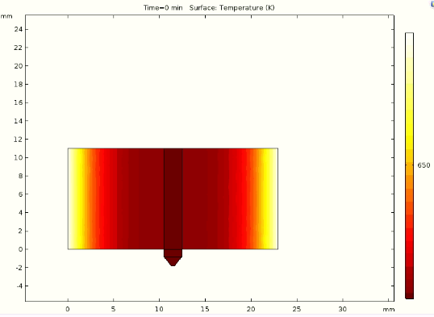
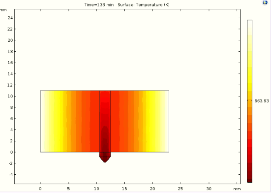
3D Nozzle Model & Final Result
The full 3D annular nozzle geometry extended the 2D prediction — capturing radial heat dissipation across the nozzle volume. PEEK properties substituted into the validated model give a degradation threshold at 137 minutes, refining the 2D estimate by 4 minutes.
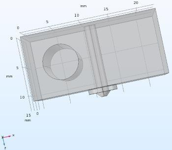
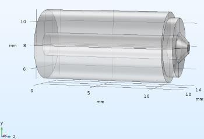
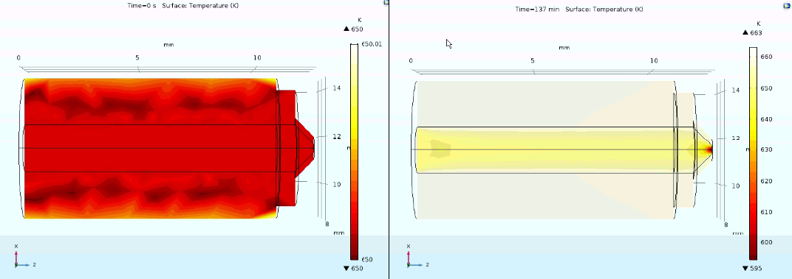
Phase I Finding: 133–137 Minute Safe Operating Window
A standard RepRap heater block at PEEK printing conditions reaches thermal degradation temperature after 133–137 minutes of continuous operation. This quantified the cooling requirement for Phase II: any active cooling system must extend this window to support uninterrupted production printing.
Phase II — Printer Fabrication (2021)
With the thermal boundary conditions established, Phase II focused on building the printer. The HyperCube Evolution open-source design from Thingiverse was chosen as the base — a rigid 30×30 mm aluminium extrusion frame well-suited for enclosure. The build followed five sequential stages, starting with a working PLA/ABS printer and progressively modifying it to handle PEEK's extreme requirements.
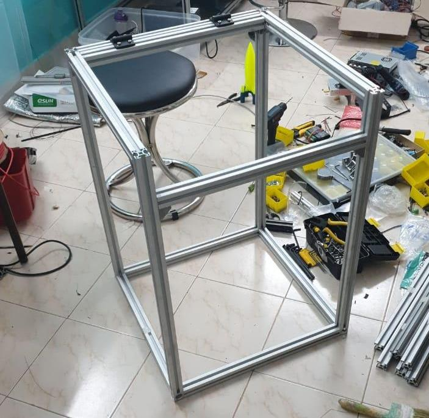
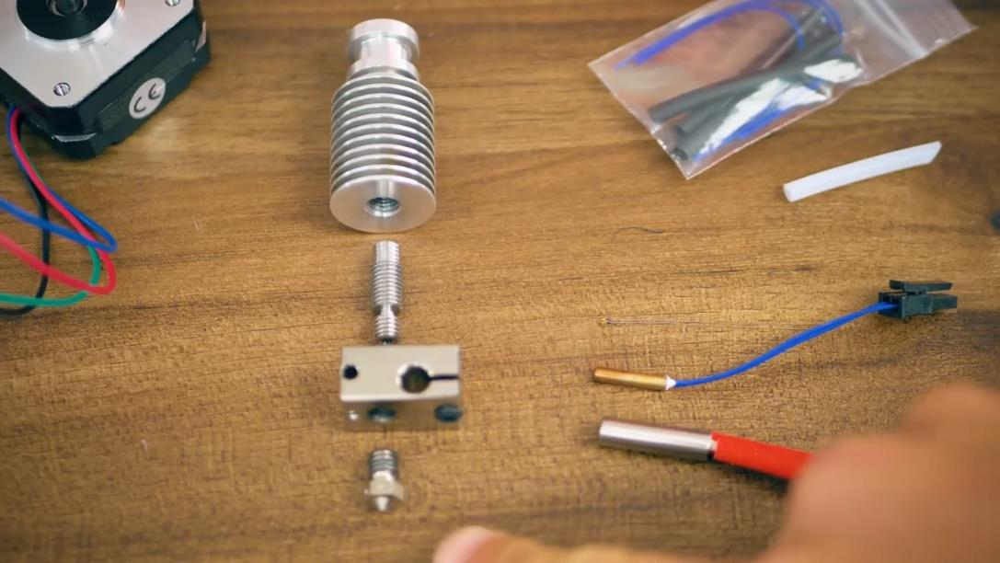
PEEK-Specific Hot-End Modifications
Once the printer was printing PLA and ABS reliably, five targeted modifications were made to the hot-end to enable PEEK printing. Each component was chosen to solve a specific failure mode at 390°C+.
Nickel-Plated Copper Hot Block
Smaller block volume reduces the energy needed to hold 450°C. Nickel coating resists fatigue from repeated high-temperature heating and cooling cycles — a critical durability requirement for continuous production use at Falcon 3D.
Pt100 Thermistor + Amplifier
Standard thermistors top out below PEEK printing temperature. A Pt100 with signal amplifier extends measurement range to 450°C while detecting small temperature deviations — essential for tight thermal control near the degradation limit.
Bimetallic Heat Break
Stainless steel core (thin walls, low conductivity) with copper ends — copper at both ends conducts heat away from the melt zone quickly, preventing thermal creep and filament jamming inside the cold zone. Extends the effective melting zone precisely.
Vanadium 0.4 mm Nozzle
Vanadium has low thermal conductivity compared to brass — reducing heat loss from the nozzle tip to surroundings. Plastic-repellent, wear-resistant surface coating keeps the nozzle clear of oozing material, preventing blockages during long prints.
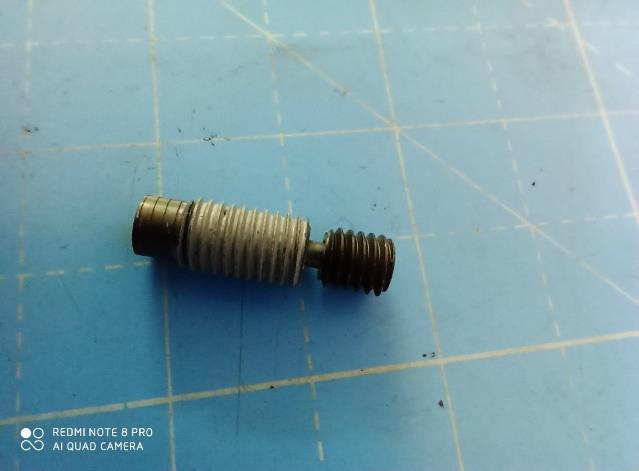
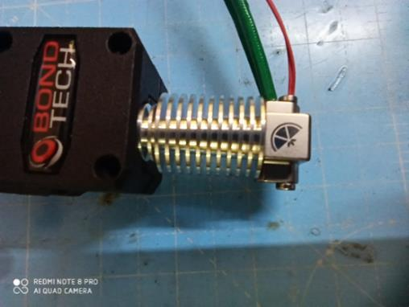
Chamber Heating & Enclosure
PEEK requires a 90°C chamber temperature to prevent the large thermal gradient between extruded part and surroundings from causing warping and delamination. An internal chamber heater — coil on a heat sink with a circulation fan — was installed inside the fully enclosed frame. All four sides were sealed with aluminium foil; the top panel is opened only for part removal, then closed during printing.
Marlin firmware was upgraded from v1.X to Marlin 2.32x, adding high-temperature safety protocols that trigger shutdown if the nozzle temperature approaches 450°C — the absolute upper safety limit.
Calibration, Test Prints & Final Build
Before switching to PEEK, calibration runs with ABS validated the motion system accuracy. Extruder step count was fine-tuned in firmware after the first prints showed slight over-extrusion. Fevistick adhesive was applied to the glass bed to improve first-layer adhesion. Once the printer was producing clean ABS geometry, the PEEK hot-end modifications were installed and the system was brought to temperature.
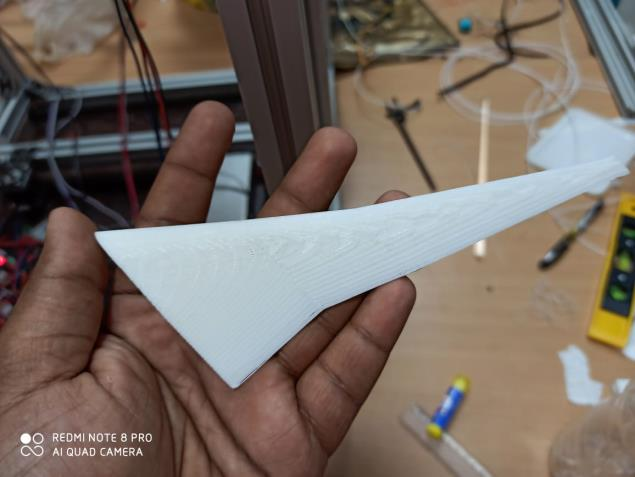
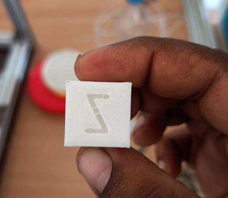
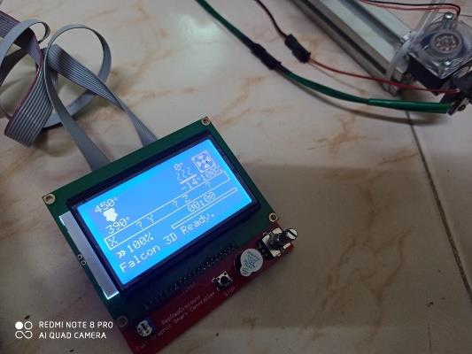

Process Parameter Development & Optimisation
Commissioning the hardware was only half the work. Achieving stable, repeatable PEEK output required a systematic approach to process parameter development — one that mirrors what is done on industrial extrusion lines. With the printer operational, nozzle geometry, thermal profiles, feed rates, and cooling parameters were methodically adjusted and trialled. Each variable was isolated, tested across a range, and the output assessed for dimensional accuracy, layer adhesion, and surface integrity before moving to the next.
Thermal Profile Optimisation
Nozzle temperature, bed temperature, and chamber temperature were tuned independently. PEEK demands a narrow window — too cold causes under-extrusion and layer delamination; too hot risks thermal degradation (663 K threshold established in Phase I). Final stable print temperature: 380–390°C nozzle, 150°C bed, 90°C chamber.
Feed Rate & Extrusion Multiplier
PEEK's high melt viscosity requires slower feed rates than standard polymers. Extruder step count and extrusion multiplier were calibrated against measured output using calibration cubes — correcting the initial over-extrusion identified in ABS trials before any PEEK material was used.
DOE — Identifying Optimal Process Windows
A structured Design of Experiments approach was applied across the key variables to identify the process window that minimised print failures, material waste, and defect rates. Interactions between nozzle temperature, print speed, and cooling were mapped — enabling targeted modifications rather than one-variable-at-a-time guesswork.
Output: Reduced Failures & Improved Consistency
Process modifications resulting from the DOE improved equipment availability, reduced scrap from failed prints, and achieved consistent output quality across successive builds. Energy efficiency improved as the optimal thermal profile reduced the time the chamber heater ran at full load.
Firmware Configuration — High-Temperature Safety Protocols
Before any PEEK filament was loaded, Marlin firmware (v2.32x) was configured with hard limits and thermal runaway protection to ensure the hardware could not exceed safe operating bounds. This is the commissioning step that turns a physical build into a validated, safe-to-operate system — without it, an undetected heater fault could trigger a fire or destroy the hot-end assembly.
// ── Thermistor type ──────────────────────────────────────────────────── // Pt100 amplifier board (high-temp range: 0–500°C, ±0.5°C accuracy) // Required for PEEK nozzle temps above 300°C #define TEMP_SENSOR_0 20 // PT100 via MAX31865 amplifier #define TEMP_SENSOR_BED 1 // 100k NTC — bed to 150°C // ── Hard temperature limits ──────────────────────────────────────────── // Upper bounds set with safety margin above PEEK print temp (390°C) // Degradation onset at 663 K (390°C) → max capped at 460°C #define HEATER_0_MAXTEMP 460 // Nozzle hard cutoff (°C) #define BED_MAXTEMP 160 // Bed hard cutoff (°C) #define CHAMBER_MAXTEMP 100 // Enclosure hard cutoff (°C) // ── Thermal runaway protection ───────────────────────────────────────── // Detects heater failure (open circuit, shorted thermistor, runaway) // Critical for high-temp operation where failure can cause fire #define THERMAL_PROTECTION_HOTENDS #define THERMAL_PROTECTION_PERIOD 40 // Seconds to reach setpoint #define THERMAL_PROTECTION_HYSTERESIS 4 // °C deviation before fault #define THERMAL_PROTECTION_BED #define THERMAL_PROTECTION_BED_PERIOD 20 // ── PID tuning — nozzle ──────────────────────────────────────────────── // Auto-tuned at 390°C (PEEK print temp) using M303 E0 S390 C8 // High Kp required — 50W heater cartridge into nickel copper hot block #define PIDTEMP #define DEFAULT_Kp 28.45 #define DEFAULT_Ki 2.18 #define DEFAULT_Kd 92.73 // ── Minimum extrusion temperature ───────────────────────────────────── // Prevents cold extrusion — PEEK must be fully molten before feedrate load #define EXTRUDE_MINTEMP 350 // °C minimum to enable extrusion
The thermal runaway detection configuration was the most critical safety step: if the Pt100 thermistor reads below setpoint for more than 40 seconds during heating, the firmware kills all heater outputs and halts the machine. This is the hardware equivalent of a fail-safe interlock — a concept directly applicable to any industrial process running near material degradation limits.
Build Cost vs. Commercial Benchmark
The cheapest commercial PEEK printer with equivalent capability (350×350×350 mm build volume) retails at Rs. 5,00,000 — the custom build delivers the same print parameters at 81% lower cost.
Outcomes
📄 Peer-Reviewed Publication
Research contributed to the published paper "Nozzle Flow Characteristics of PEEK Material in 3D Printing" — investigating thermal and melt-extrusion behaviour for high-temperature polymer FDM.
81% Cost Reduction
Fully PEEK-capable FDM printer built at Rs. 93,125 — against a commercial benchmark of Rs. 5,00,000. Same print specs: 450°C nozzle, 150°C bed, 90°C chamber, 0.4 mm vanadium nozzle.
Degradation Window Quantified
COMSOL simulation determined the 133–137 minute safe operating window before thermal degradation — a validated design input that did not previously exist in open literature for this nozzle geometry.
Industry Deployment — Falcon 3D
Printer built for deployment at Falcon 3D, Chennai. Firmware branded "Falcon 3D Ready." and configured for production use — taking the project from academic research to a working industrial asset.